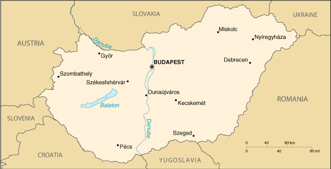

|
Hungary | |
| Introduction Geography People Government Economy Communications Transportation Military Transnational Issues | ||
|  | ||
| Hungary | Introduction | Top of Page |
| Background: | Hungary was part of the polyglot Austro-Hungarian Empire, which collapsed during World War I. The country fell under communist rule following World War II. In 1956, a revolt and announced withdrawal from the Warsaw Pact were met with a massive military intervention by Moscow. In the more open GORBACHEV years, Hungary led the movement to dissolve the Warsaw Pact and steadily shifted toward multiparty democracy and a market-oriented economy. Following the collapse of the USSR in 1991, Hungary developed close political and economic ties to Western Europe. It joined NATO in 1999 and is a frontrunner in a future expansion of the EU. |
| Hungary | Geography | Top of Page |
| Location: | Central Europe, northwest of Romania |
| Geographic coordinates: | 47 00 N, 20 00 E |
| Map references: | Europe |
| Area: |
total:
93,030 sq km
land: 92,340 sq km water: 690 sq km |
| Area - comparative: | slightly smaller than Indiana |
| Land boundaries: |
total:
2,009 km
border countries: Austria 366 km, Croatia 329 km, Romania 443 km, Yugoslavia 151 km, Slovakia 515 km, Slovenia 102 km, Ukraine 103 km |
| Coastline: | 0 km (landlocked) |
| Maritime claims: | none (landlocked) |
| Climate: | temperate; cold, cloudy, humid winters; warm summers |
| Terrain: | mostly flat to rolling plains; hills and low mountains on the Slovakian border |
| Elevation extremes: |
lowest point:
Tisza River 78 m
highest point: Kekes 1,014 m |
| Natural resources: | bauxite, coal, natural gas, fertile soils, arable land |
| Land use: |
arable land:
51%
permanent crops: 3.6% permanent pastures: 12.4% forests and woodland: 19% other: 14% (1999) |
| Irrigated land: | 2,060 sq km (1993 est.) |
| Environment - current issues: | the approximation of Hungary's standards in waste management, energy efficiency, and air, soil, and water pollution with environmental requirements for EU accession will require large investments |
| Environment - international agreements: |
party to:
Air Pollution, Air Pollution-Nitrogen Oxides, Air Pollution-Sulphur 85, Air Pollution-Volatile Organic Compounds, Antarctic Treaty, Biodiversity, Climate Change, Desertification, Endangered Species, Environmental Modification, Hazardous Wastes, Marine Dumping, Nuclear Test Ban, Ozone Layer Protection, Ship Pollution, Wetlands
signed, but not ratified: Air Pollution-Persistent Organic Pollutants, Air Pollution-Sulphur 94, Antarctic-Environmental Protocol, Law of the Sea |
| Geography - note: | landlocked; strategic location astride main land routes between Western Europe and Balkan Peninsula as well as between Ukraine and Mediterranean basin |
| Hungary | People | Top of Page |
| Population: | 10,106,017 (July 2001 est.) |
| Age structure: |
0-14 years:
16.63% (male 862,468; female 818,052)
15-64 years: 68.66% (male 3,406,717; female 3,532,008) 65 years and over: 14.71% (male 546,992; female 939,780) (2001 est.) |
| Population growth rate: | -0.32% (2001 est.) |
| Birth rate: | 9.32 births/1,000 population (2001 est.) |
| Death rate: | 13.21 deaths/1,000 population (2001 est.) |
| Net migration rate: | 0.74 migrant(s)/1,000 population (2001 est.) |
| Sex ratio: |
at birth:
1.07 male(s)/female
under 15 years: 1.05 male(s)/female 15-64 years: 0.96 male(s)/female 65 years and over: 0.58 male(s)/female total population: 0.91 male(s)/female (2001 est.) |
| Infant mortality rate: | 8.96 deaths/1,000 live births (2001 est.) |
| Life expectancy at birth: |
total population:
71.63 years
male: 67.28 years female: 76.3 years (2001 est.) |
| Total fertility rate: | 1.25 children born/woman (2001 est.) |
| HIV/AIDS - adult prevalence rate: | 0.05% (1999 est.) |
| HIV/AIDS - people living with HIV/AIDS: | 2,500 (1999 est.) |
| HIV/AIDS - deaths: | less than 100 (1999 est.) |
| Nationality: |
noun:
Hungarian(s)
adjective: Hungarian |
| Ethnic groups: | Hungarian 89.9%, Roma 4%, German 2.6%, Serb 2%, Slovak 0.8%, Romanian 0.7% |
| Religions: | Roman Catholic 67.5%, Calvinist 20%, Lutheran 5%, atheist and other 7.5% |
| Languages: | Hungarian 98.2%, other 1.8% |
| Literacy: |
definition:
age 15 and over can read and write
total population: 99% male: 99% female: 98% (1980 est.) |
| Hungary | Government | Top of Page |
| Country name: |
conventional long form:
Republic of Hungary
conventional short form: Hungary local long form: Magyar Koztarsasag local short form: Magyarorszag |
| Government type: | parliamentary democracy |
| Capital: | Budapest |
| Administrative divisions: | 19 counties (megyek, singular - megye), 20 urban counties* (singular - megyei varos), and 1 capital city** (fovaros); Bacs-Kiskun, Baranya, Bekes, Bekescsaba*, Borsod-Abauj-Zemplen, Budapest**, Csongrad, Debrecen*, Dunaujvaros*, Eger*, Fejer, Gyor*, Gyor-Moson-Sopron, Hajdu-Bihar, Heves, Hodmezovasarhely*, Jasz-Nagykun-Szolnok, Kaposvar*, Kecskemet*, Komarom-Esztergom, Miskolc*, Nagykanizsa*, Nograd, Nyiregyhaza*, Pecs*, Pest, Somogy, Sopron*, Szabolcs-Szatmar-Bereg, Szeged*, Szekesfehervar*, Szolnok*, Szombathely*, Tatabanya*, Tolna, Vas, Veszprem, Veszprem*, Zala, Zalaegerszeg* |
| Independence: | 1001 (unification by King Stephen I) |
| National holiday: | St. Stephen's Day, 20 August |
| Constitution: | 18 August 1949, effective 20 August 1949, revised 19 April 1972; 18 October 1989 revision ensured legal rights for individuals and constitutional checks on the authority of the prime minister and also established the principle of parliamentary oversight; 1997 amendment streamlined the judicial system |
| Legal system: | rule of law based on Western model |
| Suffrage: | 18 years of age; universal |
| Executive branch: |
chief of state:
Ferenc MADL (since NA August 2000)
head of government: Prime Minister Viktor ORBAN (since 6 July 1998) cabinet: Council of Ministers elected by the National Assembly on the recommendation of the president elections: president elected by the National Assembly for a five-year term; election last held 6 June 2000 (next to be held by June 2005); prime minister elected by the National Assembly on the recommendation of the president election results: Ferenc MADL elected president; percent of legislative vote - NA% (but by a simple majority in the third round of voting); Viktor ORBAN elected prime minister; percent of legislative vote - NA% note: to be elected, the president must win two-thirds of legislative vote in the first two rounds or a simple majority in the third round |
| Legislative branch: |
unicameral National Assembly or Orszaggyules (386 seats; members are elected by popular vote under a system of proportional and direct representation to serve four-year terms)
elections: last held on 10 and 24 May 1998 (next to be held May/June 2002) election results: percent of vote by party (5% or more of the vote required for parliamentary representation in the first round) - MSZP 32.0%, FIDESZ 28.2%, FKGP 13.8%, SZDSZ 7.9%, MIEP 5.5%, MMP 4.1%, MDF 2.8%, KDNP 2.3%, MDNP 1.5%; seats by party - MSZP 134, FIDESZ 148, FKGP 48, SZDSZ 24, MDF 17, MIEP 14, independent 1; note - seating as of 2000 by party - MSZP 136, FIDESZ 141, FKGP 48, SZDSZ 24, MDF 16, MIEP 12, independents 9 |
| Judicial branch: | Constitutional Court (judges are elected by the National Assembly for nine-year terms) |
| Political parties and leaders: | Alliance of Free Democrats or SZDSZ [Gabor DEMSZKY]; Christian Democratic People's Party or KDNP [Gyorgy GICZY, president]; Federation of Young Democrats-Hungarian Civic Party or FYD-HCP [Laszlo KOVER]; note - used to be Hungarian Civic Party or FIDESZ; Hungarian Democratic Forum or MDF [Ibolya DAVID]; Hungarian Democratic People's Party or MDNP [Erzsebet PUSZTAI, chairman]; Hungarian Justice and Life Party or MIEP [Istvan CSURKA, chairman]; Hungarian Socialist Party or MSZP [Laszlo KOVACS, chairman]; Hungarian Workers' Party or MMP [Gyula THURMER, chairman]; Independent Smallholders or FKGP [Jozsef TORGYAN, president] |
| Political pressure groups and leaders: | NA |
| International organization participation: | ABEDA, Australia Group, BIS, CCC, CE, CEI, CERN, EAPC, EBRD, ECE, EU (applicant), FAO, G- 9, IAEA, IBRD, ICAO, ICC, ICFTU, ICRM, IDA, IEA, IFC, IFRCS, ILO, IMF, IMO, Inmarsat, Intelsat, Interpol, IOC, IOM, ISO, ITU, MINURSO, NAM (guest), NATO, NEA, NSG, OAS (observer), OECD, OPCW, OSCE, PCA, PFP, UN, UNCTAD, UNESCO, UNFICYP, UNHCR, UNIDO, UNIKOM, UNMIBH, UNMIK, UNMOGIP, UNOMIG, UNU, UPU, WCL, WEU (associate), WFTU, WHO, WIPO, WMO, WToO, WTrO, ZC |
| Diplomatic representation in the US: |
chief of mission:
Ambassador Geza JESZENSZKY
chancery: 3910 Shoemaker Street NW, Washington, DC 20008 telephone: [1] (202) 362-6730 FAX: [1] (202) 966-8135 consulate(s) general: Los Angeles and New York |
| Diplomatic representation from the US: |
chief of mission:
Ambassador Peter F. TUFO
embassy: Szabadsag Ter 12, H.-1054 Budapest mailing address: pouch: American Embassy Budapest, 5270 Budapest Place, Department of State, Washington, DC 20521-5270 telephone: [36] (1) 475-4400, 475-4703 (after hours) FAX: [36] (1) 475-4764 |
| Flag description: | three equal horizontal bands of red (top), white, and green |
| Hungary | Economy | Top of Page |
| Economy - overview: | Hungary continues to demonstrate strong economic growth and to work toward accession to the European Union. The private sector accounts for over 80% of GDP. Foreign ownership of and investment in Hungarian firms is widespread, with cumulative foreign direct investment totaling $23 billion by 2000. Hungarian sovereign debt was upgraded in 2000 to the second-highest rating among all the Central European transition economies. Inflation - a top economic concern in 2000 - is still high at almost 10%, pushed upward by higher world oil and gas and domestic food prices. Economic reform measures such as health care reform, tax reform, and local government financing have not yet been addressed by the ORBAN government. |
| GDP: | purchasing power parity - $113.9 billion (2000 est.) |
| GDP - real growth rate: | 5.5% (2000 est.) |
| GDP - per capita: | purchasing power parity - $11,200 (2000 est.) |
| GDP - composition by sector: |
agriculture:
5%
industry: 35% services: 60% (2000 est.) |
| Population below poverty line: | 8.6% (1993 est.) |
| Household income or consumption by percentage share: |
lowest 10%:
3.9%
highest 10%: 24.8% (1996) |
| Inflation rate (consumer prices): | 9.8% (1999 est.) |
| Labor force: | 4.2 million (1997) |
| Labor force - by occupation: | services 65%, industry 27%, agriculture 8% (1996) |
| Unemployment rate: | 9.4% (2000 est.) |
| Budget: |
revenues:
$13 billion
expenditures: $14.4 billion, including capital expenditures of $NA (2000 est.) |
| Industries: | mining, metallurgy, construction materials, processed foods, textiles, chemicals (especially pharmaceuticals), motor vehicles |
| Industrial production growth rate: | 18% (2000 est.) |
| Electricity - production: | 36.75 billion kWh (1999) |
| Electricity - production by source: |
fossil fuel:
61.09%
hydro: 0.51% nuclear: 38.4% other: 0% (1999) |
| Electricity - consumption: | 35.234 billion kWh (1999) |
| Electricity - exports: | 2.35 billion kWh (1999) |
| Electricity - imports: | 3.406 billion kWh (1999) |
| Agriculture - products: | wheat, corn, sunflower seed, potatoes, sugar beets; pigs, cattle, poultry, dairy products |
| Exports: | $25.2 billion (f.o.b., 2000) |
| Exports - commodities: | machinery and equipment 59.5%, other manufactures 29.4%, food products 6.9%, raw materials 2.4%, fuels and electricity 1.8% (2000) |
| Exports - partners: | Germany 37%, Austria 9%, Italy 6%, Netherlands 5% (2000) |
| Imports: | $27.6 billion (f.o.b., 2000) |
| Imports - commodities: | machinery and equipment 51.1%, other manufactures 35.9%, fuels and electricity 8.1%, food products 2.8%, raw materials 2.1% (2000) |
| Imports - partners: | Germany 25%, Russia 8%, Austria 7%, Italy 7% (2000) |
| Debt - external: | $29.6 billion (2000) |
| Economic aid - recipient: | $122.7 million (1995) |
| Currency: | forint (HUF) |
| Currency code: | HUF |
| Exchange rates: | forints per US dollar - 282.240 (January 2001), 282.179 (2000), 237.146 (1999), 214.402 (1998), 186.789 (1997), 152.647 (1996) |
| Fiscal year: | calendar year |
| Hungary | Communications | Top of Page |
| Telephones - main lines in use: | 3.095 million (1997) |
| Telephones - mobile cellular: | 1.269 million (July 1999) |
| Telephone system: |
general assessment:
the telephone system has been modernized and is capable of satisfying all requests for telecommunication service
domestic: the system is digitalized and highly automated; trunk services are carried by fiber-optic cable and digital microwave radio relay; a program for fiber-optic subscriber connections was initiated in 1996; heavy use is made of mobile cellular telephones international: Hungary has fiber-optic cable connections with all neighboring countries; the international switch is in Budapest; satellite earth stations - 2 Intelsat (Atlantic Ocean and Indian Ocean regions), 1 Inmarsat, 1 very small aperture terminal (VSAT) system of ground terminals |
| Radio broadcast stations: | AM 17, FM 57, shortwave 3 (1998) |
| Radios: | 7.01 million (1997) |
| Television broadcast stations: | 35 (plus 161 low-power repeaters) (1995) |
| Televisions: | 4.42 million (1997) |
| Internet country code: | .hu |
| Internet Service Providers (ISPs): | 16 (2000) |
| Internet users: | 650,000 (2000) |
| Hungary | Transportation | Top of Page |
| Railways: |
total:
7,606 km
broad gauge: 36 km 1.524-m gauge standard gauge: 7,394 km 1.435-m gauge (2,270 km electrified; 1,236 km double track) narrow gauge: 176 km 0.760-m gauge (1998) note: Hungary and Austria jointly manage the cross-border standard-gauge railway connecting Gyor, Sopron, and Ebenfurt (Gysev railroad) a distance of about 101 km in Hungary and 65 km in Austria |
| Highways: |
total:
188,203 km
paved: 81,680 km (including 448 km of expressways) unpaved: 106,523 km (1998 est.) |
| Waterways: | 1,373 km (permanently navigable) (1997) |
| Pipelines: | crude oil 1,204 km; natural gas 4,387 km (1991) |
| Ports and harbors: | Budapest, Dunaujvaros |
| Merchant marine: |
total:
1 ship (1,000 GRT or over) totaling 1,199 GRT/1,050 DWT
ships by type: cargo 1 (2000 est.) |
| Airports: | 43 (2000 est.) |
| Airports - with paved runways: |
total:
16
over 3,047 m: 2 2,438 to 3,047 m: 8 1,524 to 2,437 m: 4 914 to 1,523 m: 1 under 914 m: 1 (2000 est.) |
| Airports - with unpaved runways: |
total:
27
2,438 to 3,047 m: 3 1,524 to 2,437 m: 4 914 to 1,523 m: 12 under 914 m: 8 (2000 est.) |
| Heliports: | 5 (2000 est.) |
| Hungary | Military | Top of Page |
| Military branches: | Ground Forces, Air Force; note - there is a paramilitary Border Guard which is under the Ministry of Interior |
| Military manpower - military age: | 18 years of age |
| Military manpower - availability: | males age 15-49: 2,573,119 (2001 est.) |
| Military manpower - fit for military service: | males age 15-49: 2,050,404 (2001 est.) |
| Military manpower - reaching military age annually: | males: 64,121 (2001 est.) |
| Military expenditures - dollar figure: | $822 million (FY00) |
| Military expenditures - percent of GDP: | 1.6% (FY00) |
| Hungary | Transnational Issues | Top of Page |
| Disputes - international: | Gabcikovo/Nagymaros Dam dispute with Slovakia is before the ICJ |
| Illicit drugs: | major transshipment point for Southwest Asian heroin and cannabis and transit point for South American cocaine destined for Western Europe; limited producer of precursor chemicals, particularly for amphetamine and methamphetamine |
{kind=link}